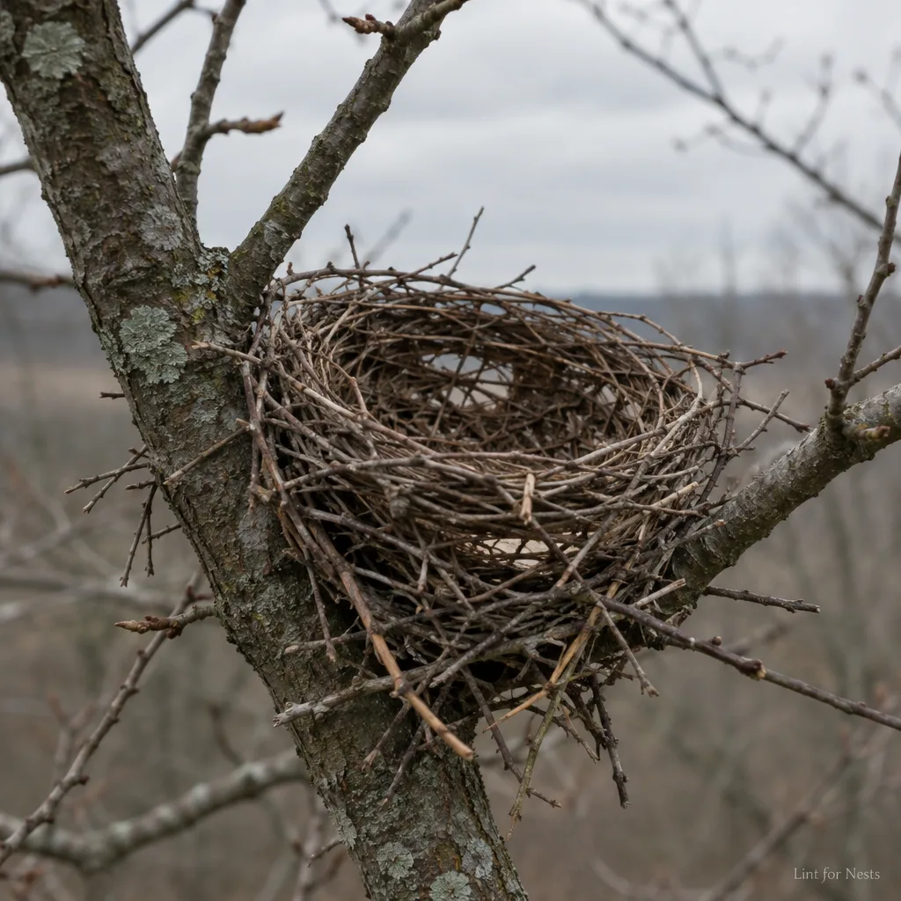
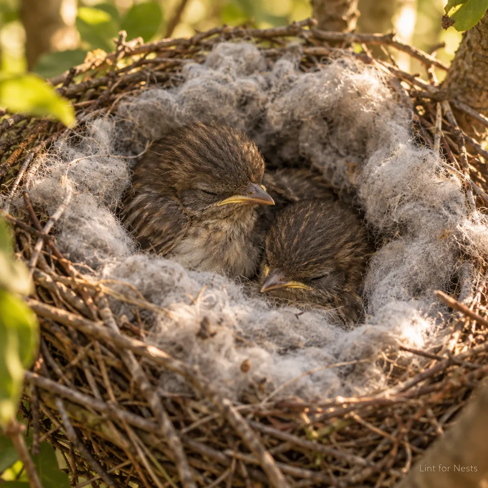
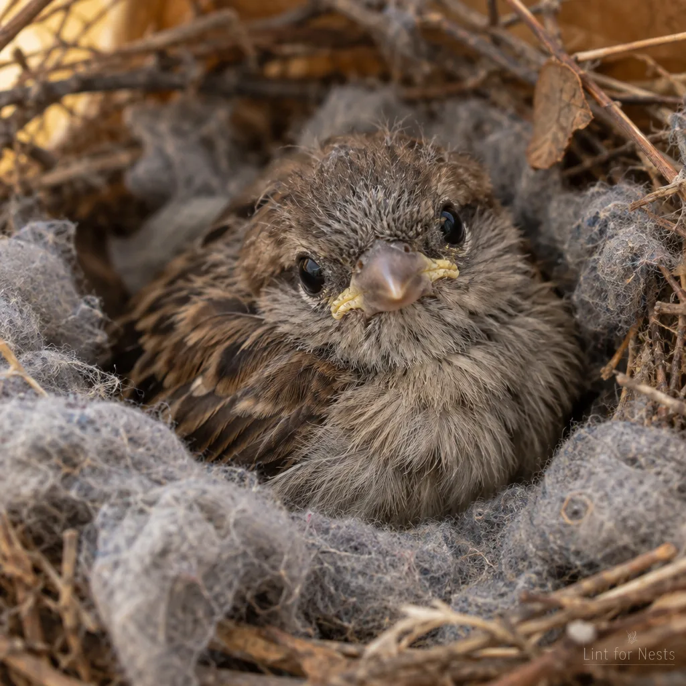
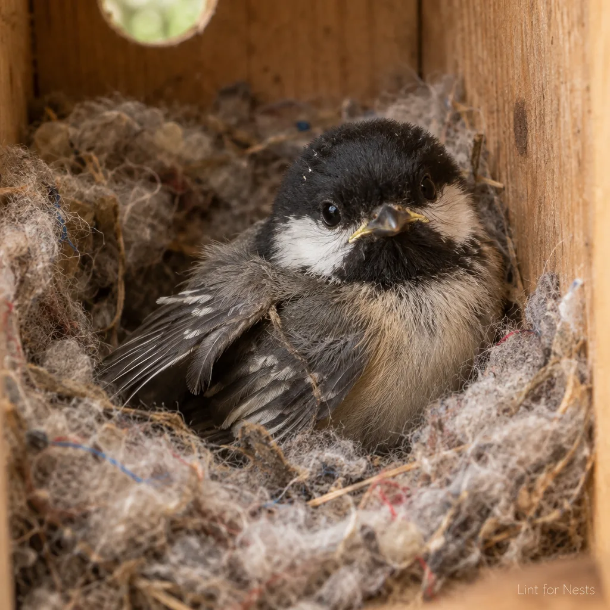
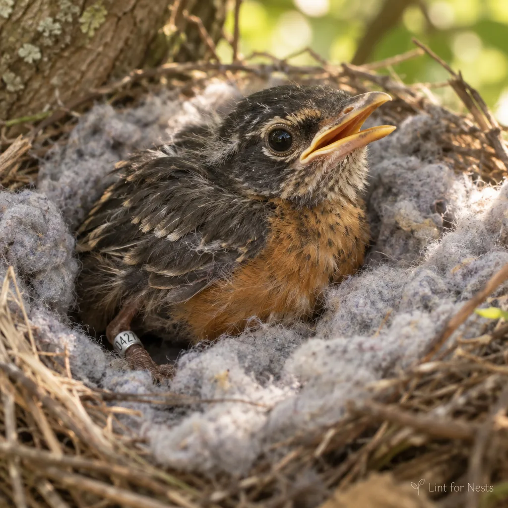

Rescue Stories
Every insulated nest has a story. Most of them end with a warm bird, which is the only ending we accept. Names have been changed, because they are birds and did not have names until we gave them some.



Found on a Tuesday, warm by Thursday
Dusty was found alone in a gutter in Cedar Falls after an early cold snap. His intake nest scored a 2 out of 10 on the standard loft scale. Two ounces of Grade A cotton-blend lint later, Dusty spent his first full night without shivering. He now shows a strong preference for blue-gray fibers, which our technicians describe as "having taste."

The January intake
Pip arrived in January, which in Minnesota is not a month so much as a verdict. Her rescue box was lined the same afternoon with lint from a single donor in Owatonna, a retired postal worker with what our graders called "the yield of a much younger navel." Pip fledged in spring. The donor asked for nothing, but got a certificate anyway.

Band #0047
Mabel is the first bird in our program to be insulated entirely by one family: a father, two sons, and a grandfather who came out of retirement for the fall harvest. Four generations of navel, one warm robin. Mabel was banded in March and has since been spotted twice, both times looking, in the words of a volunteer, "smug."